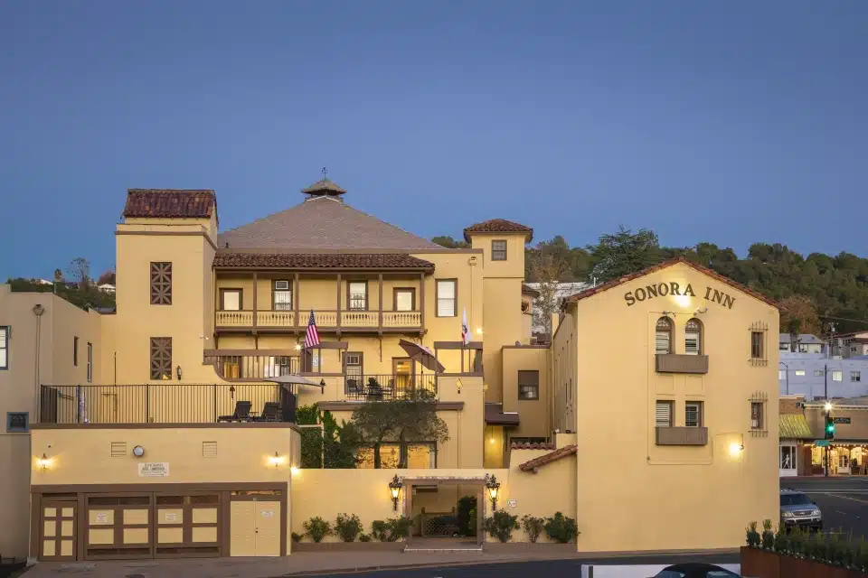
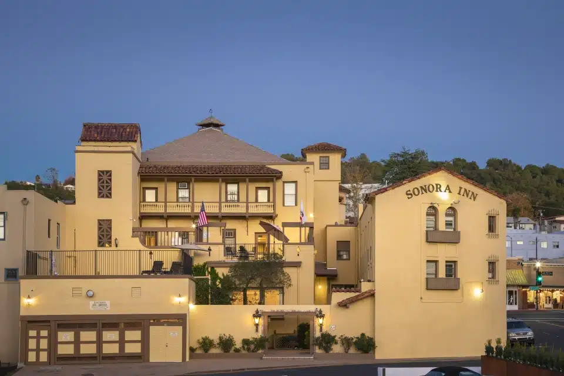

Sonora, California, offers a range of accommodations that cater to the needs and preferences of visitors. Nestled in the heart of the Sierra Nevada foothills, this charming town provides a delightful escape for travelers seeking a serene and picturesque getaway.
From cozy bed and breakfasts to modern hotels and rustic cabins,
Sonora offers a diverse selection of accommodations to suit every budget and taste.
-
Sonora Inn: A historic inn located in the heart of downtown Sonora,offering comfortable rooms with a touch of nostalgia and modern amenities. Click Here
-
Heritage Inn Yosemite/Sonora: This budget-friendly hotel provides clean and spacious rooms,along with a seasonal outdoor pool and complimentary breakfast. Click Here
-
The Gold Lodge: A charming boutique motel featuring well-appointed rooms,a courtyard with a heated pool, and a complimentary continental breakfast. Click Here
-
Gunn House Hotel: This Victorian-style bed and breakfast offers beautifully decorated rooms,a garden courtyard, and a delicious homemade breakfast. Click Here
-
INNS of California Sonora: A centrally located hotel with comfortable rooms,a pool, and a complimentary continental breakfast. It is within walking distance of downtown Sonora.
Click Here
-
Bradford Place Inn: A romantic bed and breakfast housed in a restored Victorian mansion,offering luxurious rooms, a garden, and a delicious gourmet breakfast. Click Here
-
Aladdin Inn: This family-friendly motel provides spacious rooms,a pool, and a convenient location close to Sonora's attractions and outdoor activities. Click Here
-
Lazy Z Resort: Nestled in the Sierra Nevada foothills, this tranquil resort offers a variety of accommodations, including cabins and cottages. Guests can enjoy amenities such as private decks,
BBQ facilities, a swimming pool, and access to hiking trails. Click Here
-
Jamestown Railtown Motel: Located in nearby Jamestown, this motel offers comfortable rooms and convenient access to attractions like Railtown 1897 State Historic Park,
where visitors can experience steam train rides and explore the fascinating railroad heritage. Click Here
-
Yosemite Pines RV Resort and Family Lodging: Situated just outside Sonora, this resort offers a range of accommodations, including RV sites, cabins, and tent sites.
Guests can enjoy amenities such as a swimming pool, mini-golf, a petting farm, and easy access to the natural wonders of Yosemite National Park. Click Here
 
